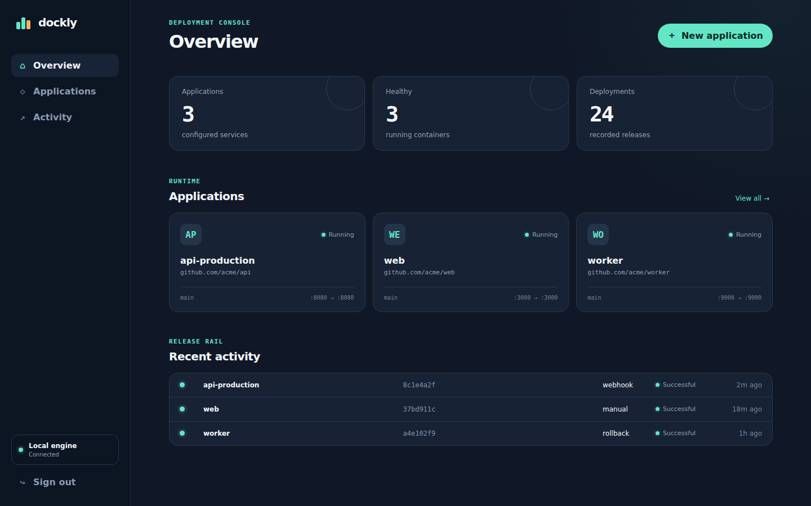
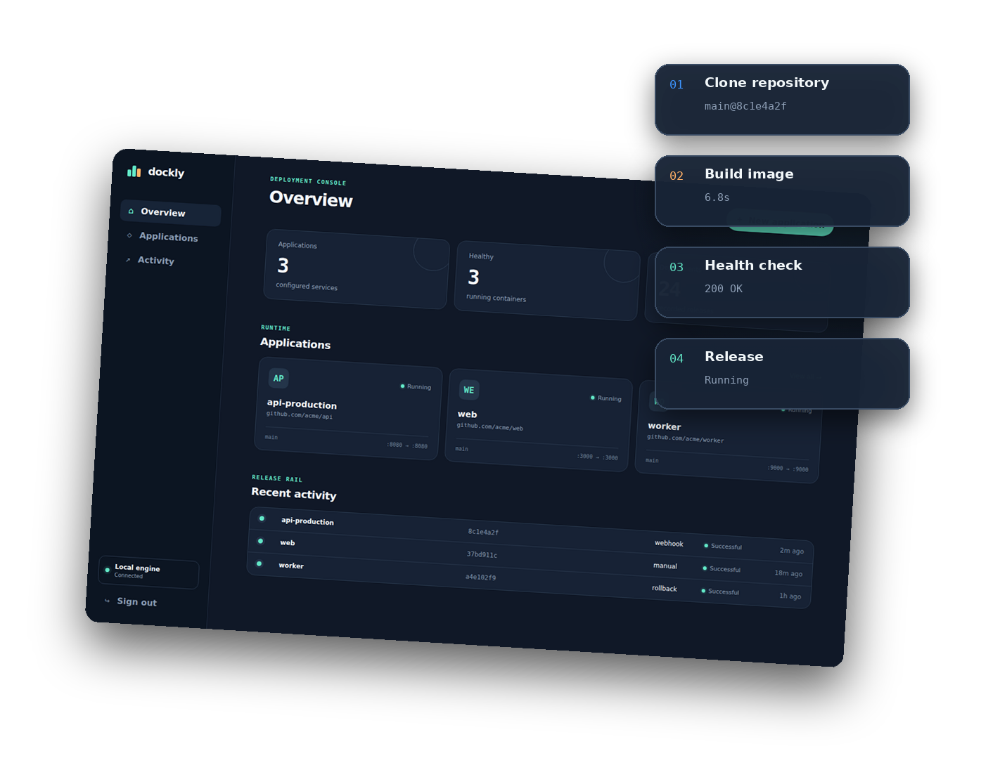
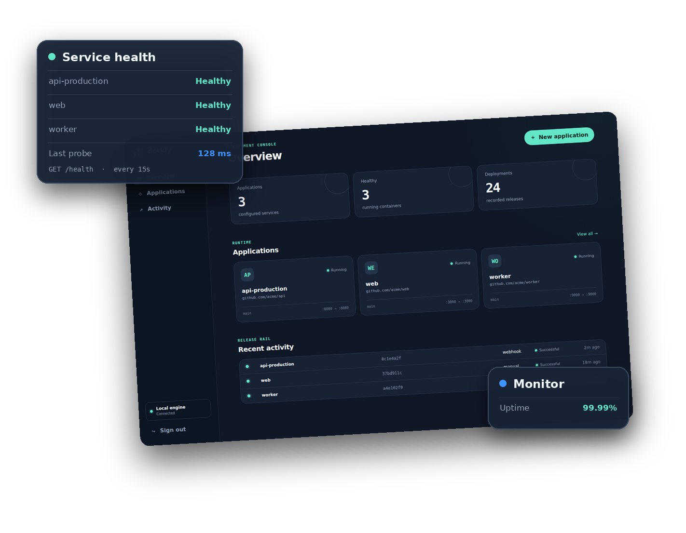
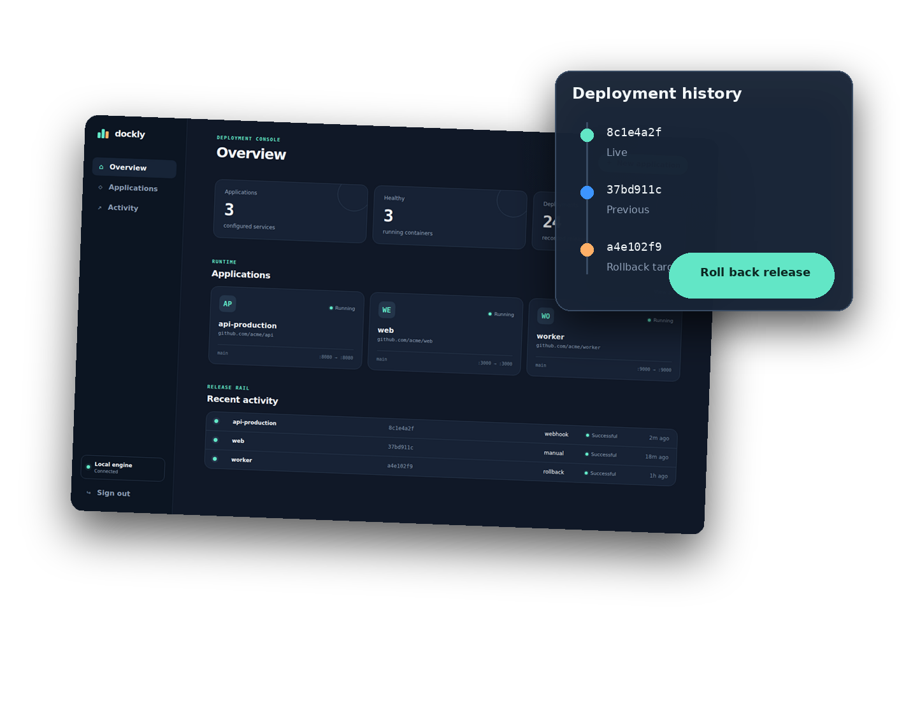
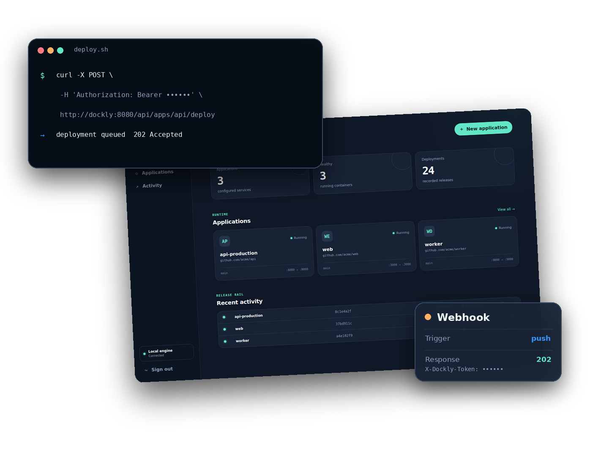

Community
The complete Dockly deployment platform.
$0open source, forever
Included:
- Git and Docker deployments
- Health checks, logs, and monitoring
- Release history and rollbacks
- Environment values, API, and webhooks
- Responsive embedded dashboard
A lightweight deployment platform for your own server — build with Docker, watch every release, and roll back with confidence.
Open source · single Go binary · Docker-native · no database or queue

Connect a repository, build an image, release it, and keep the operational context close. Dockly handles the useful path without turning one server into a platform team.
Choose a repository and branch. Dockly clones the exact revision, builds its Dockerfile, starts the container, and records the image and commit as one release.

Dockly waits for your HTTP health endpoint before considering a release ready. Container state and recent output stay one click away in the application view.

Dockly keeps the commit, image, trigger, timing, output, and result for every deployment. Select a successful release and put that image back into service.

The dashboard uses the same JSON API exposed to your scripts. Use bearer authentication for automation and a dedicated token for Git provider webhooks.

Dockly targets a single trusted Linux host with Docker Engine. The provided Compose file mounts the Docker socket and stores state in a named volume.
No. Dockly is one Go binary with an embedded dashboard and an atomic JSON state file. Git and the Docker CLI are its runtime contracts.
Dockly removes the unhealthy container and attempts to restore the image that was running before the deployment. The failed release remains in history with its error and output.
Private repositories work when Git credentials are already available inside the Dockly runtime. First-class deploy-key management and encrypted-at-rest secrets are intentionally beyond the current MVP.
Deploy from Git, run with Docker, and keep every release within reach.